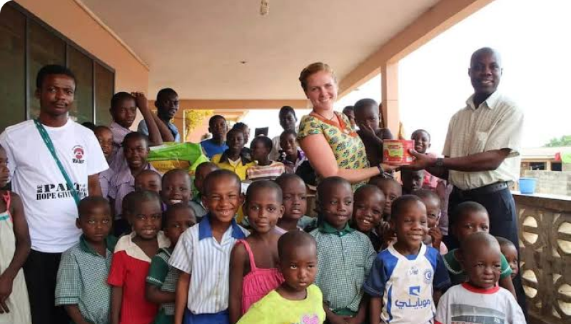
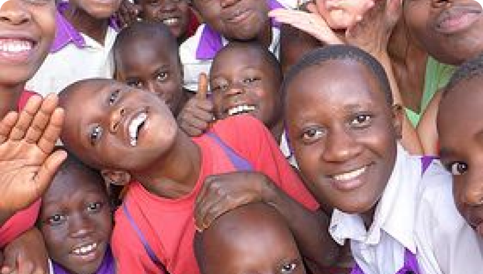
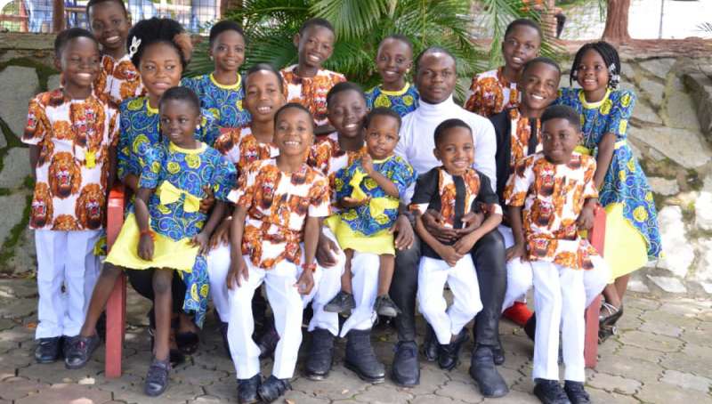
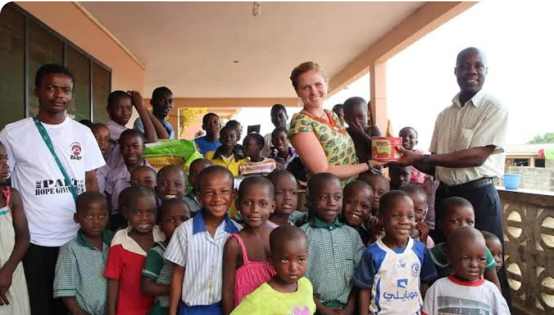
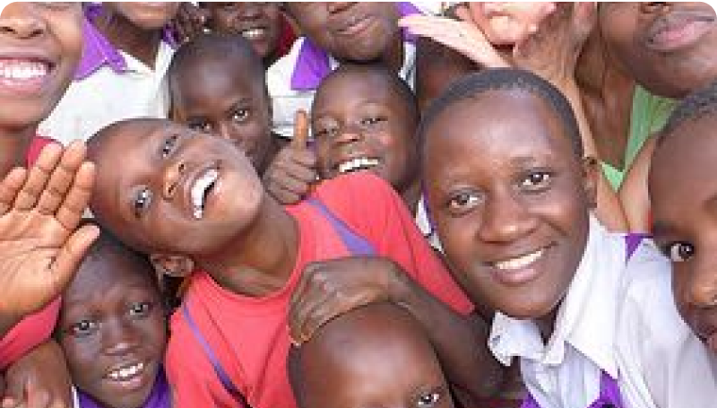
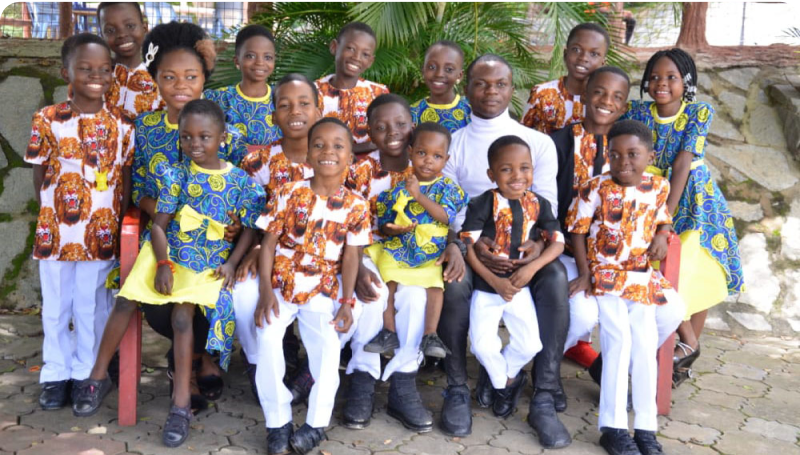
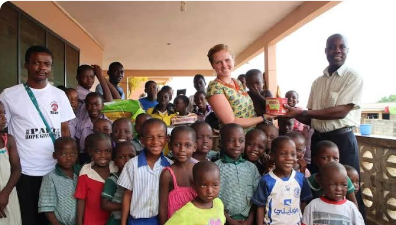
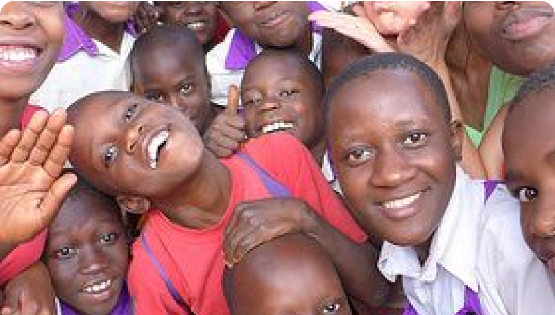
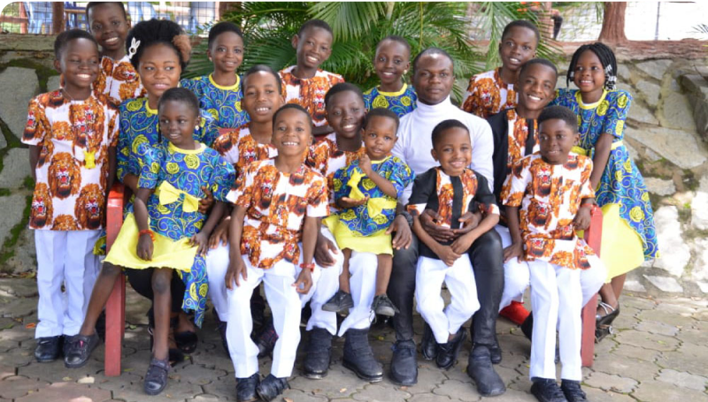

Orphanage Homes Seeking Affiliation Can Apply to Join Us
SUCCORHOMES
Company
About Us
Collaboration
Skills Training
Orphanage Homes
Contact Us


08012345678
Instagram
Facebook
succorhomes@gmail.com
Help
FAQs
Donor Guide
Privacy
Company Policy
The Homes We Support
Succor Homes is working hand in hand with multiple orphanage homes to
provide standard skill training to the children in the homes
Search Orphanage....
Select Location
Search

Love Home Orphanage
Love Home Orphanage was officially opened to the public in
December 2005. The Orphanage was established with the aim
of catering for abused and abandoned children.
Plot 7B, Jubilee/ CMD Road, Lagos.

Fred Tobi Orphanage Home
Fred Tobi Orphanage is a divine haven for orphans, It was
the first non-governmental indigenous orphanage approved
by the Kebbi state government in Nigeria.
Sani Abacha Bye Pass, Nasarawa, Birnin Kebbi

Adorable Angels Orphanage
At Adorable Angels' Orphanage Homes, we provide basic
nursery and primary education to indigent and vulnerable
children at our Orphanage
High Tension, Catholic Church, Lugbe, Abuja

Love Home Orphanage
Love Home Orphanage was officially opened to the public in
December 2005. The Orphanage was established with the aim
of catering for abused and abandoned children.
Plot 7B, Jubilee/ CMD Road, Lagos.

Fred Tobi Orphanage Home
Fred Tobi Orphanage is a divine haven for orphans, It was
the first non-governmental indigenous orphanage approved
by the Kebbi state government in Nigeria.
Sani Abacha Bye Pass, Nasarawa, Birnin Kebbi

Adorable Angels Orphanage
At Adorable Angels' Orphanage Homes, we provide basic
nursery and primary education to indigent and vulnerable
children at our Orphanage
High Tension, Catholic Church, Lugbe, Abuja

Love Home Orphanage
Love Home Orphanage was officially opened to the public in
December 2005. The Orphanage was established with the aim
of catering for abused and abandoned children.
Plot 7B, Jubilee/ CMD Road, Lagos.

Fred Tobi Orphanage Home
Fred Tobi Orphanage is a divine haven for orphans, It was
the first non-governmental indigenous orphanage approved
by the Kebbi state government in Nigeria.
Sani Abacha Bye Pass, Nasarawa, Birnin Kebbi

Adorable Angels Orphanage
At Adorable Angels' Orphanage Homes, we provide basic
nursery and primary education to indigent and vulnerable
children at our Orphanage
High Tension, Catholic Church, Lugbe, Abuja
Prev
1
2
3
4
5
Next